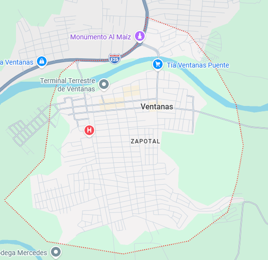

Reseña: Es el núcleo agrícola central de la provincia, oficialmente declarado como la "Capital Maicera del Ecuador" por sus masivas cosechas de maíz duro que abastecen a las industrias del país.
Urbanas: Ventanas, 10 de Noviembre.
Rurales: Zapotal, Chacarita, Los Ángeles.
Humitas, tamales, torrejas de maíz verde y el rústico seco de gallina criolla montuvio.
Monumento a la Mazorca de Maíz: Símbolo arquitectónico de la identidad productiva local situado a la entrada del cantón.
Balnearios fluviales del Río Zapotal: Muy populares durante los fines de semana y feriados debido a sus frescas aguas y cabañas de comida autóctona.
Hotel El Manantial, Hostal Ventanas.
Carlos Carriel Abad.

75.000 habitantes.
